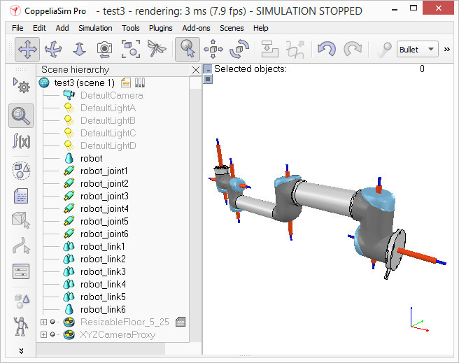

NX應力分析 <<
Previous Next >> 重點整理
WEEK17內容
建立節點
現在，我們將關注節點和馬達，大多數時候，我們知道每個關節的準確的位置和方向，在這種情況下，我們只需使用按下[菜單欄->添加->關節-> ...]來添加關節，然後我們可以使用“位置”欄和“方向”欄更改其位置和方向。在其他情況下，我們只有 D-H矩陣（即D-H）參數，在這種情況下，我們可以透過模型瀏覽器中位於Models / tools / Denavit-Hartenberg joint creator.ttm中的工具模型來構建關節，
但在其他的狀況下，我們不清楚關節位置和他的方向。所以，我們需要從導入的網格中提取它們。讓我們假設這是我們目前的情況。不用處理修改過的，更近似的網格，而是打開一個新情景，然後再次導入原始CAD數據。大多數時候，我們可以從最初的網格中提取網格或它的基本形狀，第一步是細分原始網格，如果不起作用，我們將經由三角形編輯模式來進行操作。讓我們假設我們現在可以細分原始的網格，我們現在可以觀察更小的物件，我們正在尋找迴轉形狀，它可以用作在其位置創建節點並以相同方向來參考。首先，刪除所有不需要的物件，有時在多個打開的場景中工作也很有幫助，它可以便於可視化和操作，在我們的案例中，我們首先注意機器人的底座：它包含一個圓柱體，該圓柱體的第一個節點的位置正確。在三角形編輯模式下，我們有：

[Robot base: normal and triangle edit mode visualization]
我們通過頁面選擇器工具欄按鈕來更改攝影機的視角，為了從側面來查看物件。fit-to-view工具欄按鈕可以派上用場，可用來正確地框束物件的版本。然後，我們切換到vertex edit模式，並選擇屬於圓盤上的所有頂點。記住我們可以通過打開/關閉某些層，我們可以隱藏場景中的其他物件。然後，我們切換回三角形編輯模式：

[Selected upper disc, vertex edit mode (1 & 2), triangle edit mode (3)]
現在，我們單擊“提取圓柱體”（在這種情況下，“提取形狀”也將起作用），這只是在場景中創建了圓柱體形狀，而這個場景是根據所選定的三角形我們離開編輯模式並放棄修改物件，現在我們新增一個旋轉節點，[菜單欄->新增->節點->旋轉]，然後讓它保持被選擇的狀態，並控制提取圓柱體的形狀在位置框的“位置”選項上，我們點擊“Apply to selection (應用於選擇)”，這基本上將圓柱體的x / y / z的位置複製到節點，現在兩者的位置都相同。在[方向]選項上，我們也點擊“Apply to selection(應用於選擇)”：現在，我們選擇的物件方向也變成相同，有些時候，我們將需要圍繞其自身的參考範圍的旋轉節點增加約 90/180度，以獲得正確的方向或旋轉方向，如果需要，我們可以在該對話框的[旋轉]選項上執行此操作（在這種情況下，請不要忘記點擊“Own frame(自有框架)按鈕

[Joint in correct location, with the correct orientation]
現在我們將節點複製回原始場景並保存(不要忘記定期存檔你的資料，復原/重做功能非常有用，但不能保護你免於其他災難的影響)
我們對機器人的所有節點都重複上面的過程，然後重新命名他們，我們還將所有節點和他們的屬性稍長一點，讓我們方便查看所有關節
透過默認，將節點分配於可見圖層2，但可以在物件的公共屬性中對其進行修改，
現在，我們將所有節點分配給可見圖層10，然後為場景臨時啟用可見圖層10，以使這些節點也可視化
（默認情況下，僅激活場景的可見圖層1-8），這就是我們到目前為止的結果（模型ResizableFloor_5_25模型在模型屬性對話框中暫時不可見）：

[Joints in correct configuration]
到這裡，我們可以開始建構模型層次的結構並完成它的定義，但是，如果我們想要可以動態啟用OPUR機器人，則還有一個額外的步驟
NX應力分析 <<
Previous Next >> 重點整理